An application built for exchange students.
Study abroad is growing every year, but a student's knowledge of their destination is built on online research and word of mouth. X-change is a social platform built only for exchange and international students, to share information, find people from home, and stay safe in a new country.
The team spent weeks hunting for a problem worth solving. The breakthrough came when our teammate, an exchange student herself, described what her own arrival in the US had actually felt like: confusing, isolating, and unsupported. That lived experience became the whole project.
Little to no service guides students through visas, local laws, COVID rules, or even how to get from the airport to campus without overpaying for a taxi.
There was almost no way to meet others from the same country or ethnicity, a key buffer against homesickness, and a hard ask for introverts.
Universities focus on the business of hosting students. The lifestyle, safety, and belonging side gets left to chance.
As lead PM and designer, I ran X-change through the full design-thinking loop. Research came first and shaped everything: we used three testing methods up front to strip out the team's assumptions before a single screen existed.
Micro-analyzed the audience into three subsets: international, introverted, and safety-conscious students. Named their real wants and needs.
Translated frustrations into a feature set and a wireframe, sorting wants from needs so every screen earned its place.
Designed a rough hi-fi prototype in Figma and Adobe XD across five core pages, structured around the verified subsets.
Ran a second round of SUS and A/B testing to fine-tune features and split needs cleanly across the app.
Asked the target audience what they wanted to see. Interviews translated raw frustration into clear, designable wants and needs.
Observed the difficult tasks and social barriers international students face firsthand, without prompting or leading them.
System Usability Scale, user feedback, and journey mapping, so two versions could compete on real productivity, not opinion.
Personas kept the team honest. Shanté and Aria represented the introverted and the safety-conscious ends of the audience, and every feature was checked against their goals and frustrations.
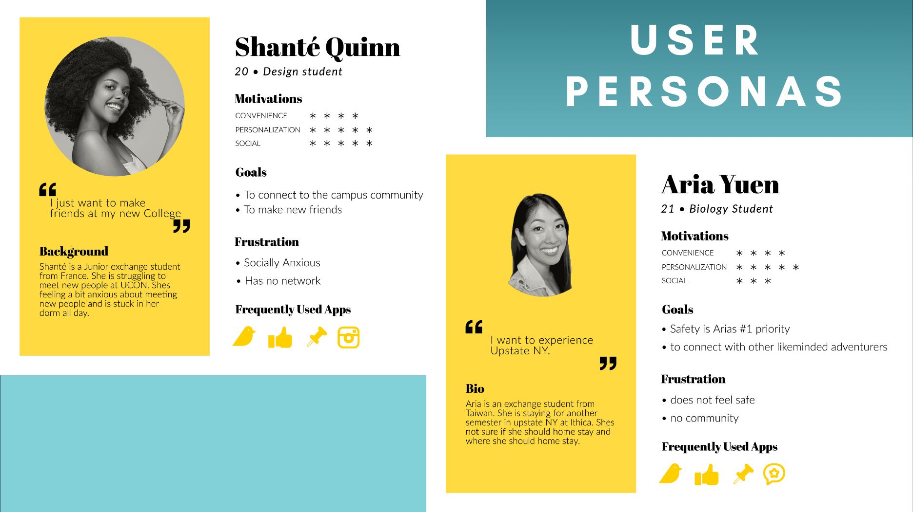
Interviews and fly-on-the-wall sessions surfaced the same ache again and again: existing resources flatten very different students into one "international" box. These are real voices from the research.
"I want to connect with other students that also speak my language and are from my exchange program."
"I hate how my only resources are multicultural clubs. We aren't the same people."
"I feel lied to about the program here. I wish I had resources to guide me with honesty, and to show me what I can do in my area now."
The final architecture split the experience into five pages, each mapped to a real need. Safety is the number-one priority, so verification and document storage are built into the core, not bolted on.
Global posts, events, and verified reviews of schools, programs, and homestays. A feed tuned like TikTok or Instagram.
A personalized view of groups and events from direct connections, nudging students out the door and into their community.
Followers, school descriptions, ratings, and reviews so a student can judge fit and find their community before arriving.
Languages, embassy info, and secure storage for visa, passport, and vaccine card, tracking the student's journey and return.
Events, connection requests, and region-specific safety and pandemic information surfaced when it matters.
University or program verification plus ID upload gate the whole platform. Safety is X-change's first principle.
Before any color or brand, I sketched the five pages in grayscale to test structure on its own. Wireframes let the team argue about flow and hierarchy without getting distracted by visuals, and made it cheap to move things around after testing.
Once the structure held up, I brought the wireframes into medium-fidelity drafts: real copy, the X-change palette, the node logo, and the five-tab navigation. These are the working drafts where the feed, profile passport, and university reviews took their actual shape.
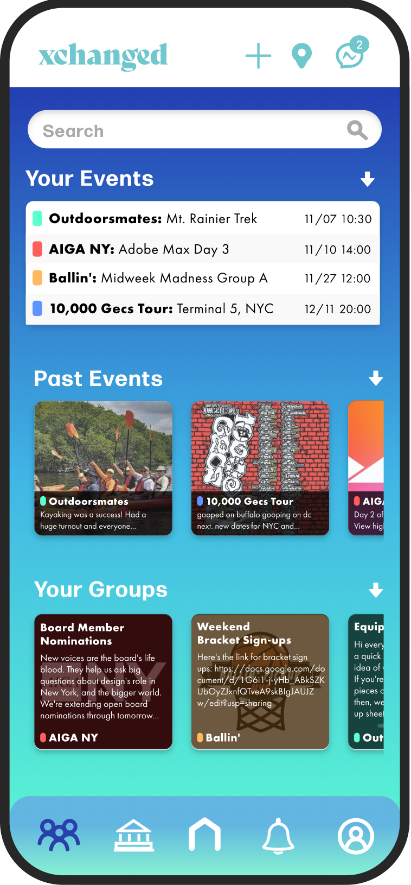
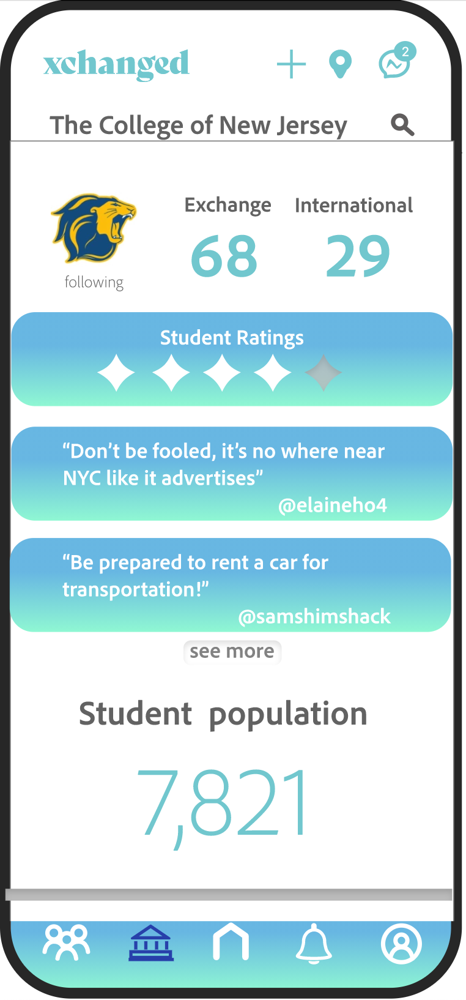
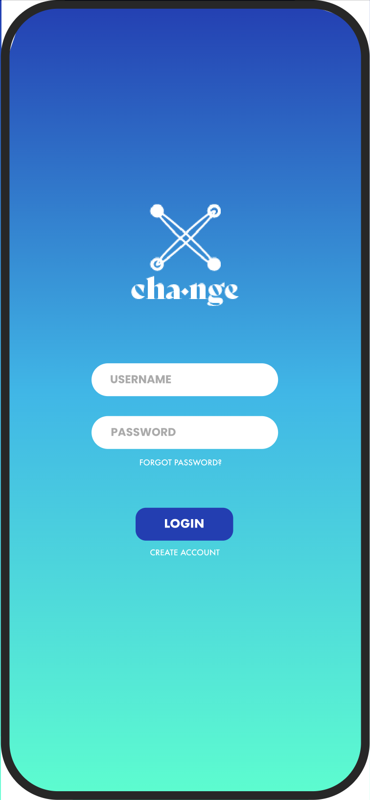
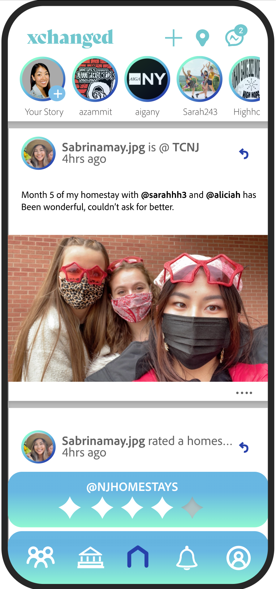
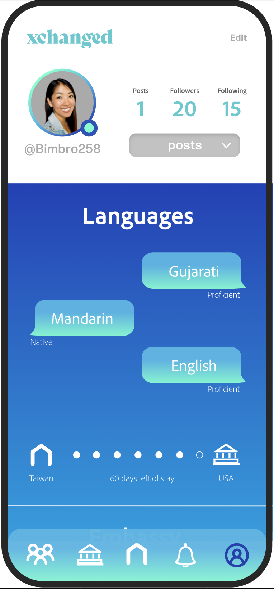
The medium-fi drafts were refined into a high-fidelity, clickable mockup in Adobe XD, with every screen linked into a real flow. Tap through it below: login, the landing feed, network, university reviews, and the passport profile.
Built in Adobe XD, the mid-fi mockup links every screen into a real flow so testers could click through tasks, not just look at static drafts. Each of the five pages was wired to the verified subsets of users we defined in research.
This is the same mockup I ran the second round of SUS and A/B testing on, then refined into the final design.
OPEN MID-FI MOCKUP IN XDThe interactive mid-fi mockup did its job: it exposed where testers hesitated. The high-fidelity build is where I acted on that. The visual language went dark and glassy for contrast, the five tabs were re-balanced against cognitive load, and the safety-first verification flow was given real weight. Tap through the live screens below.
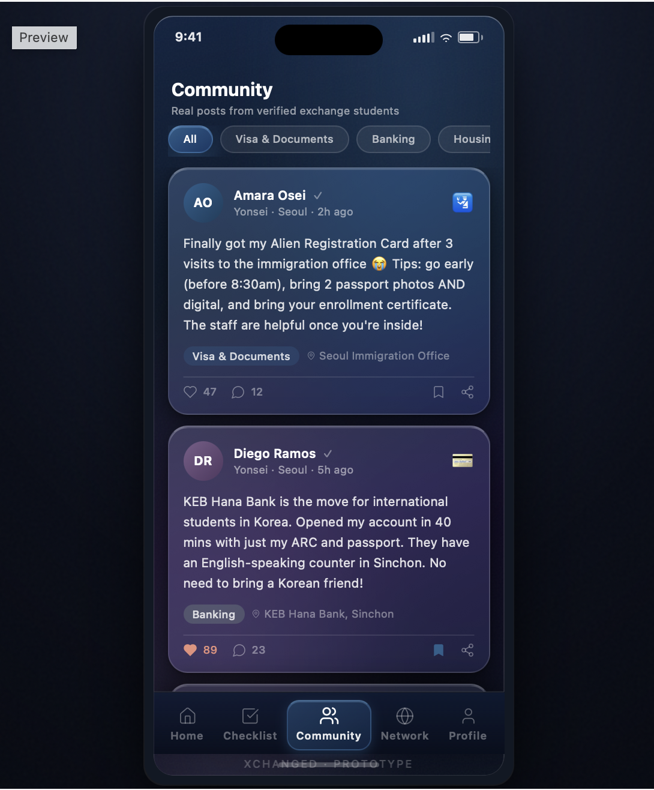
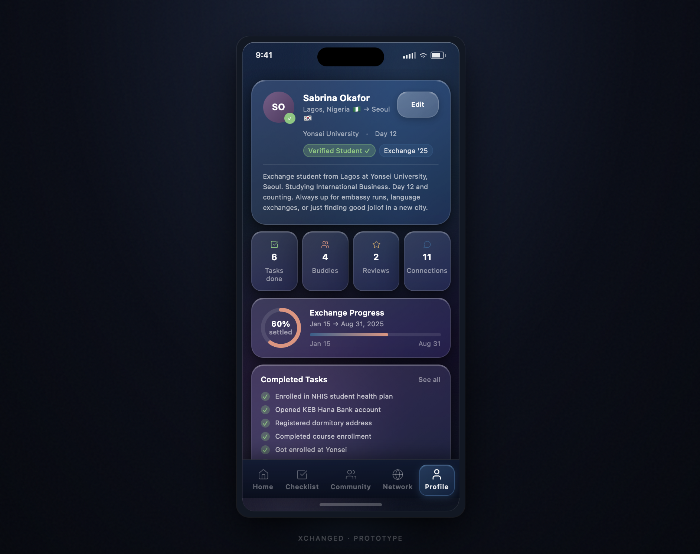
Verification is X-change's first principle, so the hi-fi gave it a dedicated, reassuring flow: explain why, upload the student ID, and confirm, with encryption stated plainly to lower anxiety at the most sensitive step.
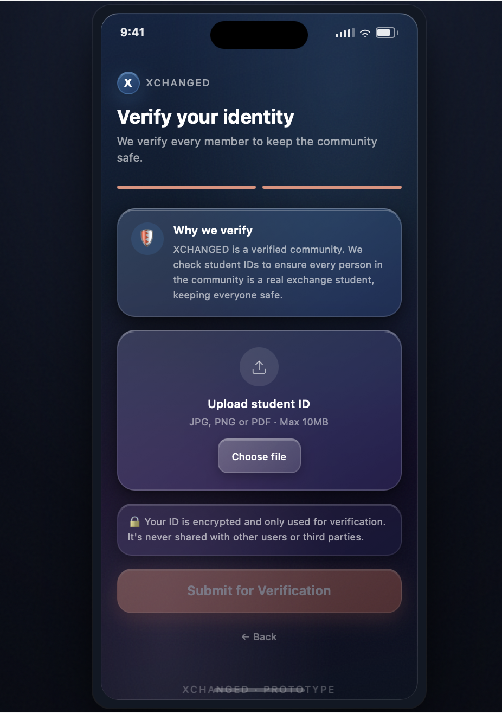
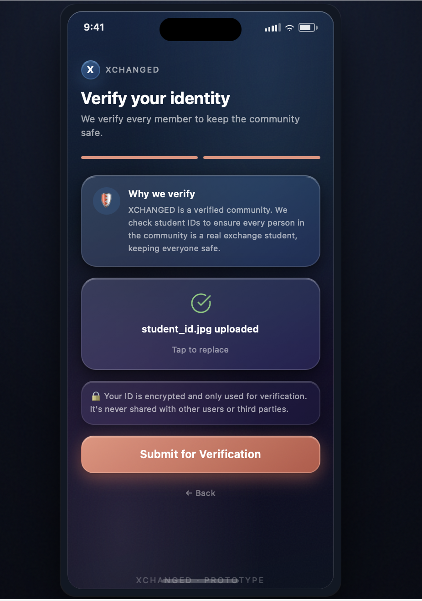
Every shift between fidelities was driven by the second round of testing, not aesthetics. Three changes mattered most.
The mid-fi crammed events, feed, and updates into a single "Events near you" view. NASA-TLX scores flagged it as a cognitive-load spike, too much information architecture in one place. In hi-fi, the feed became its own focused Home, so no single screen overloads the user.
NASA-TLX · cognitive load ↓Students needed to gauge their settling-in progress and completed tasks at a glance, not read a list. Hi-fi introduced the exchange-progress ring, stat tiles, and a completed-tasks panel, and demanded high contrast, which is exactly why the dark glass panes were introduced.
Visual hierarchy · high contrastThe mid-fi merged social browsing and tasks together. Testing showed the onboarding checklist was too important to bury, so it was promoted to its own tab. The social drafts condensed into a verified Community feed and a Network tab, keeping each job distinct.
IA · task separationAfter the drafts, I refined the hi-fi mockup and ran a second round of SUS forms and user testing. The signal was loud: students did not just tolerate X-change, they wanted it to exist.
As lead PM, I carried X-change past the screens into the logistics of a real startup: a freemium model, partnership strategy, a lean tech stack, and revenue projections we could defend to investors.
Free to download with core features, paid upgrade for premium. The most cost-effective, low-friction way to grow a brand-new app's user base.
Education USA, NHSMUN, and TOEFL (used by 11,000+ universities) supply verified students and certify safety, at no cost to join.
College developers on GitHub with AWS EC2 & RDS free tier, scalable and cost-broken, so first-year spend is mostly just developers.
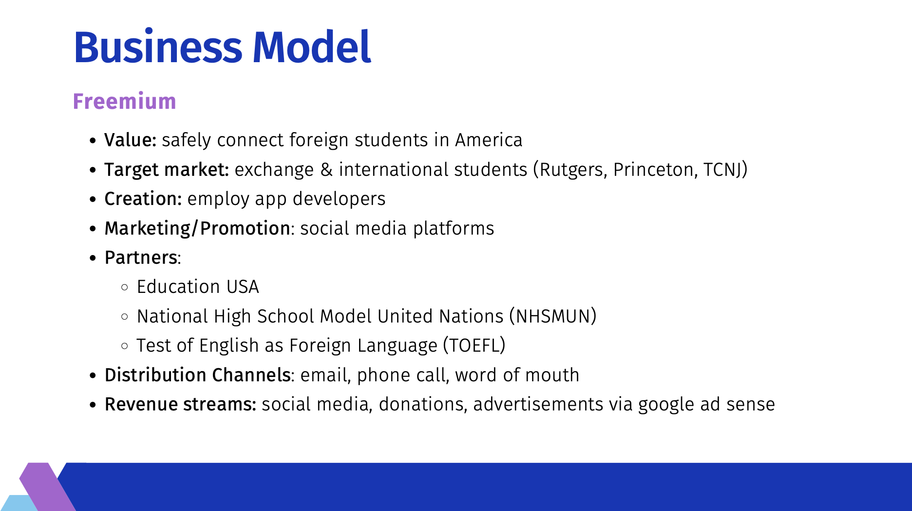
"There is no other application on the market that offers this. Out of the 6 million international students in the world, none had catered to the needs and wants of this market."
Led the design-thinking process, ran research and testing, designed the prototype, and built the business plan and investor pitch.
The exchange student whose lived experience sparked X-change, and who grounded the team in the real problem.
Shaped the testing approach and the challenges analysis, from feasibility to competitive positioning.
Worked through the technical feasibility and the architecture that made the platform buildable.